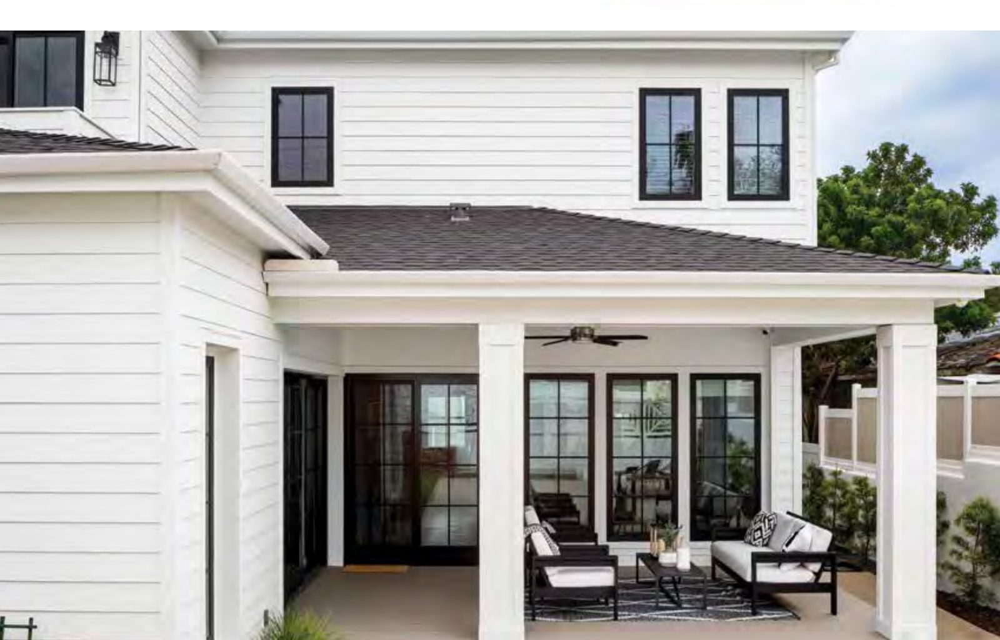
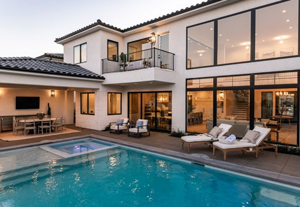

Andersen Windows · Bend, Oregon
We recommend the Andersen 100 Series for most Central Oregon homes. When a project calls for real wood interiors, we step up to the 400 Series. Either way, we measure every opening ourselves and stand behind the finished work.
Our Recommendation
Bend sits in climate zone 5B. Winter design temperatures reach roughly seven degrees below zero and summer afternoons push into the low nineties, close to a hundred-degree annual swing that your windows absorb every single year. Frames that expand, contract, and bake in high-desert UV are the ones that fail first.
The 100 Series is built from Fibrex®, Andersen's composite of reclaimed wood fiber and thermoplastic polymer. Andersen rates it twice as strong as vinyl and reports that it blocks thermal transfer far more effectively than aluminum. It will not rot, peel, flake, or fade, and the color runs through the material instead of sitting on the surface as paint.
That combination is why it is our default recommendation here: it holds a slim, modern sightline that suits Central Oregon architecture, it is available ENERGY STAR certified, and it survives our climate without asking anything of you.
Get My Free Replacement QuoteCompare the Lines
Both are Andersen. The honest difference comes down to what the frame is made of, and whether you want a real wood interior.
Andersen's Fibrex composite frame: reclaimed wood fiber blended with thermoplastic polymer. Twice as strong as vinyl, dramatically better than aluminum at blocking thermal transfer, and finished in a color that runs through the material rather than sitting on top of it.
Choose it when you want the best balance of performance, looks, and price. Slim modern sightlines, a black-on-black option that is the most requested look we quote, ENERGY STAR certified configurations, and effectively no maintenance for the life of the window.
Quote the 100 SeriesA solid wood frame protected by a vinyl-clad exterior. You get real timber on the inside: stainable, paintable, warm to the touch, with a cladding outside that shrugs off weather without the upkeep a bare wood window demands.
Choose it when you want a wood interior that matches existing millwork, or when the project needs the widest range of sizes, shapes, finishes, and hardware. Expect it to run roughly 25 to 50% more than a comparable 100 Series unit. Worth it for the right home, unnecessary for many.
Quote the 400 SeriesThe Look
The all-black exterior and interior is the finish Central Oregon homeowners ask us for most. It frames a Cascade view the way a matte does a photograph. The eye goes straight through to the mountains.


Same Windows, Different Experience
You get a straight recommendation and a firm number. There is no scripted living-room presentation, no discount that expires tonight, and no commission built into your price.
We do not run a retail showroom, and you are not paying for one. That difference goes into the windows themselves and the carpentry around them.
A window is only as good as the trim around it. We handle custom millwork in-house so the finished opening looks like it was always meant to be there.
Andersen Questions
For most Central Oregon homes, the 100 Series. Its Fibrex frame handles our temperature swings without warping or fading, it carries slim modern sightlines, and it costs meaningfully less. Step up to the 400 Series when you want a real wood interior you can stain or paint to match existing millwork, or when the project needs the widest possible range of sizes, shapes, and hardware.
Yes, and it is the most requested look we quote. The 100 Series comes in a black exterior with a black interior. Because the color runs through the Fibrex material rather than sitting on top as a coating, it will not peel or flake the way painted frames eventually do.
No. Peak View Windows and Doors is an independent contractor. We install Andersen products, but we are not affiliated with, endorsed by, or a dealer for Renewal by Andersen. Practically, that means no showroom overhead and no commissioned salesperson. You deal directly with the people doing the work.
Almost always, and that is a good thing. We measure each opening and order units built to it, so your home needs no structural modification. Custom sizing is standard on our quotes, not a surprise upcharge.
Once your windows arrive, a single opening typically takes one to three hours, and a full home of ten to fifteen windows is usually finished in one to three days. The longer part of the schedule is manufacturing lead time from order to delivery. We give you that timeline in writing with your quote so there are no surprises.
Possibly. Energy Trust of Oregon offers incentives for qualifying windows that replace single-pane or metal-framed double-pane units, but eligibility depends on which utility serves your home. Not every Central Oregon utility participates. We will check your address against the current programs when we quote, and we will tell you straight if you do not qualify.
Peak View Windows and Doors is an independent contractor and installs Andersen® products. We are not affiliated with, endorsed by, sponsored by, or a dealer for Andersen Corporation or Renewal by Andersen. Andersen® and Fibrex® are registered trademarks of Andersen Corporation. Product photography courtesy of Andersen Corporation. Product specifications reflect manufacturer-published information and are subject to change. We confirm current specs, options, and warranty terms with you in writing at quote.
Andersen Window Replacement - Bend, Oregon
We come to you, measure every opening you want replaced, walk you through the 100 and 400 Series in person, and leave you with a firm itemized quote. Serving Bend, Redmond, Sisters & all of Central Oregon.